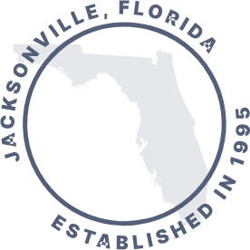
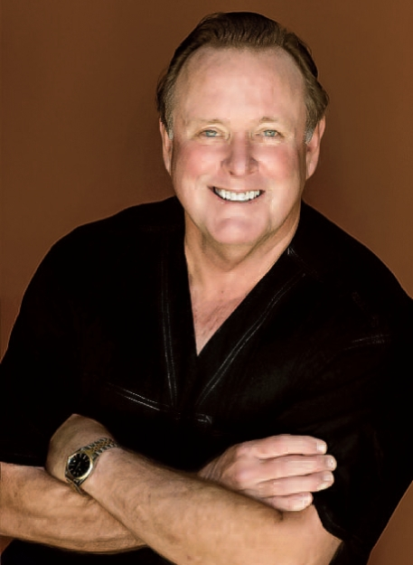
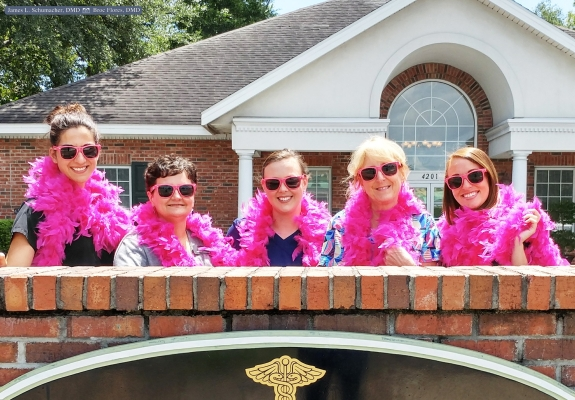
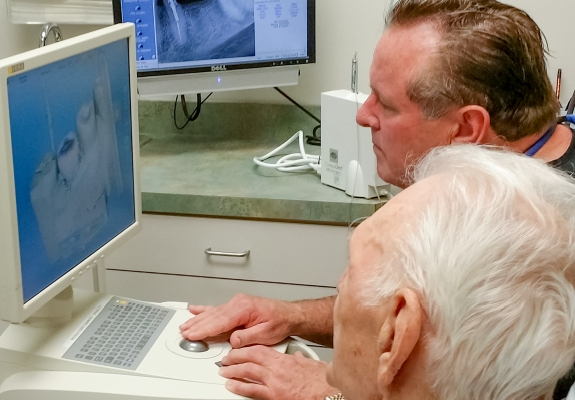
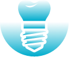
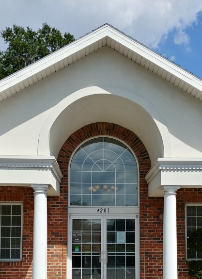

<main role="main" id="main" tabindex="-1">
    <div class="index">        
        <section id="banner">
            <figure class="wow kenburns-top">
                
            </figure>
            <article>
                <h1 class="h1"><small>Dentist – Jacksonville, FL</small> </h1>
                <div class="h2 h1">Amazing Smiles Start Here.</div>
            </article>
        </section>

        <section id="welcome" class="split">
            <div class="flex-ed">
                <article>
                    <h2 class="h2">Welcome to the <br>
                        Dental Practice of <br>
                        James Schumacher, DMD
                    </h2>
                    <p>Your smile is one-of-a-kind, and it deserves attention from professionals you can trust wholeheartedly. My team and I are committed to not only improving dental health, but our patients’ lives as well through experienced care that focuses on your goals first.</p>
                    <div class="signature">
                        
                        James L. Schumacher, DMD
                    </div>
                </article>
                <figure>
                   
                    <div class="h2">We're Local <br> <small>&amp; </small> <span>Proud</span> of It</div>
                </figure>
            </div>
            <div id="honors" class="flex-row">
                <div class="wow fadeIn" data-wow-delay=".3s" data-wow-duration="1s">
                    <div class="h4">COMMITTED</div>
                    <div class="h2">25</div>
                    <div class="h4">Years in <br>
                        Business</div>
                </div>
                <div class="wow fadeIn" data-wow-delay=".4s" data-wow-duration="1s">
                    <div class="h4">DEDICATED</div>
                    <div class="h2">500</div>
                    <div class="h4">Hours of <br>
                        Continued <br>
                        Education</div>
                </div>
                <div class="wow fadeIn" data-wow-delay=".5s" data-wow-duration="1s">
                    <div class="h4">EXCEPTIONAL</div>
                    <div class="h2">2020</div>
                    <div class="h4">America’s <br>
                        Best <br>
                        Dentists</div>
                </div>
                <div class="wow fadeIn" data-wow-delay=".6s" data-wow-duration="1s">
                    <div class="h4">RECOGNIZED</div>
                    <div class="h2">2020</div>
                    <div class="h4">Jacksonville’s <br>
                        Professionals <br>
                        Honoree</div>
                </div>
            </div>
        </section>

        <section id="meet" class="split">
            <div class="flex-ed">
                <article>
                    <h2 class="h1"><small>Dentistry with a Personal Touch</small></h2>
                    <div class="h2">Meet Dr. Schumacher</div>
                    <p>Dr. Schumacher has an incredible history in the dental field that includes 30+ years of practice, a love of teaching/mentoring dental students, countless hours of advanced continuing education from prestigious sources like the L.D. Pankey Institute, and even various international mission trips to deliver vital oral healthcare in Latin America. What’s most important, though, is the valuable connections he’s made with patients. He loves getting to know them, allowing them the opportunity to know him in return, and developing custom plans for a lifetime of good oral health.</p>
                    <a href="" class="btn">Get to Know Dr. Schumacher</a>
                </article>
                <figure  class="wow fadeInRight" data-wow-delay=".5s">
                    <div></div>
                    <a href="" class="caption">James L. Schumacher, DMD</a>
                </figure>
            </div>
        </section>

        <section id="callouts">
            <h2 class="h2">What Makes Our Dentistry Different</h2>
            <div class="flex-ed">
                <article>
                    <h2>Caring Dental Team</h2>
                    <p>At every stage of your visit, our team members will be working hard to make the experience smooth, comfortable, and stress-free. They love building relationships with patients that last for years to come!</p>
                    <a href="" class="btn">Meet Your Dental Team</a>
                </article>
                <figure class="wow fadeInRight" data-wow-delay=".3s"></figure>
            </div>
            <div class="flex-ed alt">
                <article>
                    <h2>Advanced Dental <br>
                        Technology</h2>
                    <p>We’re proud to stay up to date with the latest developments in dentistry, regularly using advanced tools like CEREC for same-day restorations, a 3D cone beam scanner, soft tissue lasers, and much more. </p>
                    <a href="" class="btn">Learn More About CEREC®</a>
                </article>
                <figure class="wow fadeInLeft" data-wow-delay=".3s"></figure>
            </div>
        </section>

        <section id="services">
            <article>
                <div class="contain">
                    <h2 class="h1"><small>Featured Dental Services</small></h2>
                    <div class="h2">How Can We Help You?</div>
                    <p>From six-month essentials to state-of-the-art solutions for tooth replacement, Schumacher Dental Center has all of the bases covered. We work closely with our patients to understand their unique priorities and recommend treatments that will lead to their newfound health and happiness. The first step is to schedule a one-on-one appointment! </p>
                    <div class="flex-row-featured">
                        <a href="" class="wow fadeIn" data-wow-delay=".3s">
                            <span></span>
                            <h3><small>I need a</small>Checkup <br>
                                & Cleaning</h3>
                        </a>
                        <a href="" class="wow fadeIn" data-wow-delay=".4s">
                            <span></span>
                            <h3><small>I have a</small>Cavity or <br>
                                Broken Tooth</h3>
                        </a>
                        <a href="" class="wow fadeIn" data-wow-delay=".5s">
                            <span></span>
                            <h3><small>I want to</small>Enhance <br>
                                My Smile</h3>
                        </a>
                        <a href="" class="wow fadeIn" data-wow-delay=".6s">
                            <span></span>
                            <h3><small>I am</small>Missing One  <br>
                                or More Teeth</h3>
                        </a>
                        <a href="" class="wow fadeIn" data-wow-delay=".7s">
                            <span></span>
                            <h3><small>I am</small>In Pain &  <br>
                                Need Help</h3>
                        </a>
                        <a href="" class="wow fadeIn" data-wow-delay=".8s">
                            <span></span>
                            <h3><small>I am</small>Afraid/Nervous <br>
                                of the Dentist</h3>
                        </a>
                    </div>
                </div>
            </article>
            <figure>
                
                <a href="" class="all">
                    <div class="h2">Can't Find  <br>What You're  <br>Looking For?</div>
                    <div class="more">Explore all Our Dental Services <i class="icon-right"></i></div>
                </a>
            </figure>
        </section>

         <section id="reviews">
             <h2 class="h1"><small>Top-Rated Dentist in Jacksonville</small></h2>
               <div class="contain">
                <div class="slick-reviews">
                    <div>
                        <span class="sc"><i></i></span>
                        <p>"This is the best dental office. Everyone in the office is very personable and friendly. Every time I go, I feel as though I am the only patient there….even though I am obviously not. The office is very clean, they answer the phone when you call, and appointments are always on time. These are just a few of the reasons why I give them 5 stars."</p>
                        <author>
                            <star></star>
                            Amber B., Jacksonville, FL
                        </author>
                    </div>
                    <div>
                        <span class="sc"><i class="icon-facebook"></i></span>
                        <p>"For the first time I don’t mind going to the dentist, they go out of their way to make you feel comfortable, they really listen to you & if you have anxiety going to the dentist (which I do) they do everything they can to help you! I would recommend them to anyone."</p>
                        <author>
                            <star></star>
                            Wendy W., Jacksonville, FL
                        </author>
                    </div>
                    <div>
                        <span class="sc"><i class="icon-yelp"></i></span>
                        <p>"My first visit with Dr. Schumacher was amazing. I am a senior citizen, and without question it is the most thorough exam of teeth and gums that i have ever had. I was extremely pleased with the treatment I received. The entire team was friendly, helpful, and interested in assisting me in the best way possible."</p>
                        <author>
                            <star></star>
                            William A., Jacksonville, FL
                        </author>
                    </div>

                </div>
                <div class="reviews-controls"> </div>
                <a href="reviews.html" class="btn">Read More Reviews</a>
               </div>
       </section>


        <section id="financing">
            <div class="contain">
                <h2 class="h1"><small>Top-Rated Dentist in Jacksonville</small></h2>
                <div class="h2">Simple & Predictable Payment Options</div>
                <div class="flex-ed-finance">
                    <a href="" class="circle wow fadeInLeft" data-wow-delay=".4s">
                        <div>
                            <span></span>
                            <h3>Dental Insurance</h3>
                            <p>By being in-network with several PPO’s, our team is able to maximize benefits for patients in need. We know all the ins and outs of insurance!</p>
                            <div class="more">Find My Plan</div>
                        </div>
                    </a>
                    <a href="" class="circle wow fadeInUp" data-wow-delay=".4s">
                        <div>
                            <span></span>
                            <h3>In-House Dental Plan</h3>
                            <p>No dental insurance? Don’t worry. Our in-office savings program offers many of the same benefits and discounts for a simple, no-strings-attached fee.</p>
                            <div class="more">See Plan Details</div>
                        </div>
                    </a>
                    <a href="" class="circle wow fadeInRight" data-wow-delay=".4s">
                        <div>
                            <span></span>
                            <h3>CareCredit<sup>®</sup> Financing</h3>
                            <p>CareCredit can help budget-minded patients split up the cost of big treatment plans over several months – and there’s little to NO interest attached.</p>
                            <div class="more">Learn More About CareCredit®</div>
                        </div>
                    </a>
                </div>
            </div>
        </section>
        <section id="assoc">
            <div class="flex-row">
                <span class="wow fadeIn" data-wow-delay=".3s"></span>
                <span class="wow fadeIn" data-wow-delay=".4s"></span>
                <span class="wow fadeIn" data-wow-delay=".5s"></span>
                <span class="wow fadeIn" data-wow-delay=".6s"></span>
                <span class="wow fadeIn" data-wow-delay=".7s"></span>
                <span class="wow fadeIn" data-wow-delay=".8s"></span>
                <span class="wow fadeIn" data-wow-delay=".9s"></span>
                <span class="wow fadeIn" data-wow-delay="1s"></span>
                <span class="wow fadeIn" data-wow-delay="1.1s"></span>
               </div>
         </section>

   </div>
    <!-- end of inside home page container -->
</main>
